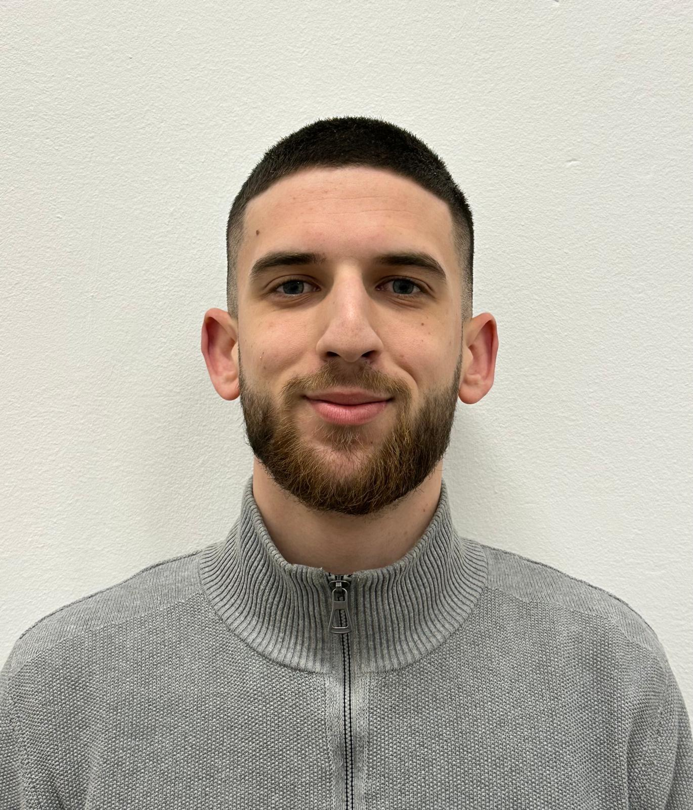

Prvostupnik inženjer računarstva (bacc. ing. comp.) s iskustvom u razvoju softvera na projektu za Hrvatski Telekom. Najviše me zanimaju backend razvoj i softverska arhitektura: gradim API-je, radim s bazama podataka i razvijam aplikacije u C#/.NET-u, Javi (Spring Boot) i Pythonu.
Imam oko šest mjeseci radnog iskustva u IT sektoru, na razvoju i održavanju aplikacija u C#/.NET-u i Javi. Radio sam s relacijskim bazama, razvojem API-ja, Azure DevOpsom i CI/CD pipelineovima. Upoznat sam s osnovama velikih jezičnih modela (LLM) i njihovom primjenom u softveru. Želim rasti u smjeru backend inženjerstva, softverske arhitekture i umjetne inteligencije.
Kontinuirano učim i razvijam svoja znanja kroz vlastite projekte i nove tehnologije.
Web i mobilna aplikacija na troslojnoj arhitekturi (React / React Native, Spring Boot REST API, PostgreSQL) koja korisniku izrađuje personalizirani prehrambeni plan.
Timski razvoj cjelovitog rješenja u agilnom okruženju. Backend u Javi i Spring Bootu, web i mobilno sučelje u Reactu, CI/CD i Docker.
Spring Boot aplikacija povezana s vanjskim sustavom preko javnog REST API-ja: razmjena i obrada podataka između sustava.
Pristup podacima iz koda u C# i Pythonu: vlastiti ORM, obrada, čišćenje i integracija podataka iz relacijskih i nerelacijskih baza.
Timski razvoj web aplikacije s Web API-jem i MVC-om, uključujući organizaciju i raspodjelu zadataka u timu.
Obrada i analiza podataka u Pythonu, prediktivna analiza i clustering za prepoznavanje obrazaca.
Single-player i multiplayer igre u JavaFX-u; igru Snake izradio sam samostalno.
Prvostupnik inženjer računarstva (bacc. ing. comp.). Stručni prijediplomski studij Primijenjeno računarstvo, smjer programsko inženjerstvo, Zagreb. Završni rad: Razvoj programskog rješenja za pametno planiranje prehrane.
Hrvatski — materinski · Engleski — C1
Vozačka dozvola B kategorije